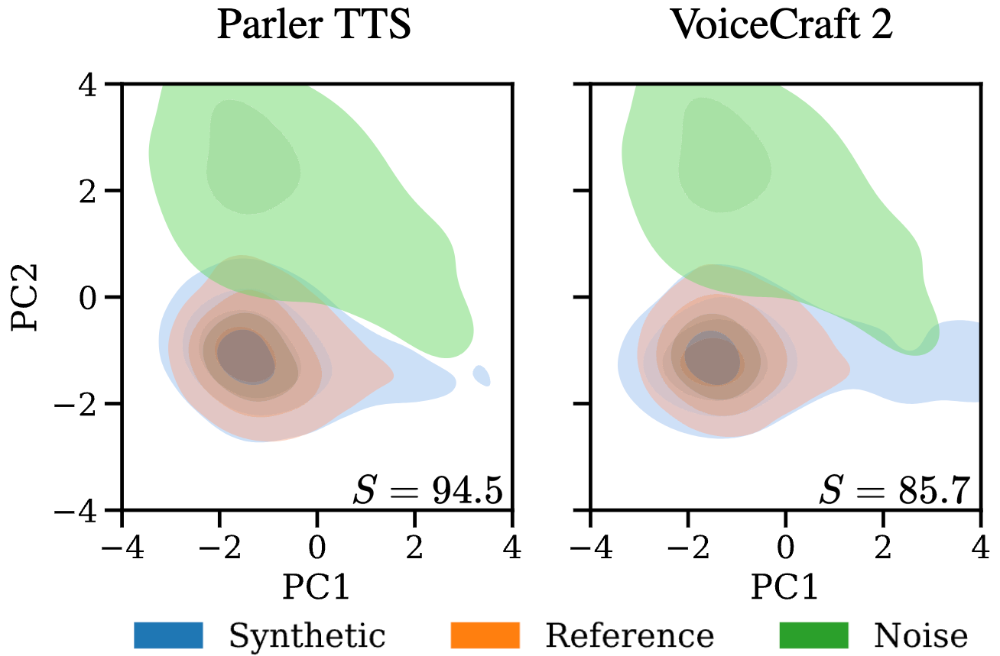
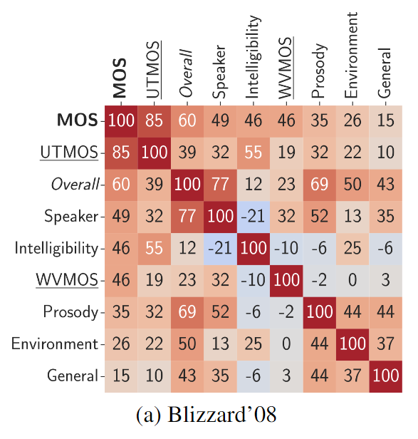
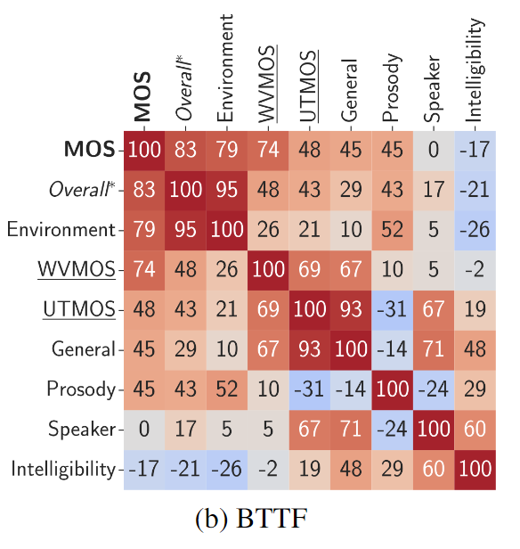
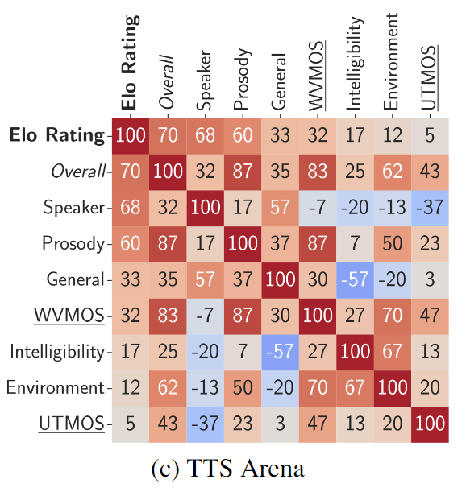

Why TTS-for-ASR?
- Data augmentation
- Domain adaptation
Why TTS-for-ASR?
- Low-resource languages
- Speaker adaptation
- Lexical adaptation
- Disordered speech
TTS Naturalness
Synthetic speech has reportedly reached human parity in terms of naturalness.
TTS Naturalness
Synthetic speech has reportedly reached human parity in terms of naturalness.
But...
There is still a gap for TTS-for-ASR.
Quantifying the Gap
\( \overset{\sim}{\theta} \leftarrow \) ASR model params trained on synthetic speech
\( \theta \leftarrow \) ASR model params trained on natural speech
\( \text{WERR}(\overset{\sim}{\theta},\theta) = \frac{\text{WER}(\overset{\sim}{\theta})}{\text{WER}(\theta)} \)
Quantifying the Gap
With \( \text{MOSR} \) as an equivalent measure for \( \text{MOS} \):
2019
- \( \text{MOSR} \approx 1.02 \)
- \( \text{WERR} \approx 7 \)
Quantifying the Gap
With \( \text{MOSR} \) as an equivalent measure for \( \text{MOS} \):
2024
- \( \text{MOSR} \approx 1 \)
- \( \text{WERR} \approx 1.5 \)
Why does the gap exist?
Let's see the synthetic and real speech as distributions.
Why does the gap exist?
If they matched perfectly, the \( \text{WERR} \) would be 1.
Why does the gap exist?
A system producing unnatural speech will have a higher \( \text{WERR} \).
Why does the gap exist?
But the same is the case if the full distribution is not covered.
TTS-for-ASR Models
- AR and NAR models
- latent variable models
- conditioning on factors such as prosody
- post-generation augmentation
- systems trained using L1 or L2 loss are still common
TTS-for-ASR Models
- AR and NAR models
- latent variable models
- conditioning on factors such as prosody
- post-generation augmentation
- systems trained using L1 or L2 loss are still common
- scaling to large datasets
Denoising Diffusion Probabilistic Models
- Used for synthetic data for computer vision tasks
- Probabilistic \( \rightarrow \) better distribution coverage
- Architectures can be kept the same
Scaling using DDPM
- Same architecture (U-Net), DDPM vs. MSE loss
- From 100 to 2500 hours of training data
Scaling using DDPM
- Scaling alone does not solve the problem
Analysing Distribution Factors
Analysing Distribution Factors
- Frechet Inception Distance (FID)
- based on Wasserstein Distance \( W \)
- defined for both 1-D and N-D latent distributions
Analysing Distribution Factors
An equivalent for speech is to calculate \( W \) between SSL representations of the synthetic and natural speech
Analysing Distribution Factors
An equivalent for speech is to calculate \( W \) between SSL representations of the synthetic and natural speech
But this is neither robust nor interpretable.
Analysing Distribution Factors
We improve on this by evaluating different factors.
Analysing Distribution Factors
- General
- Environment
- Intelligibility
- Prosody
- Speaker
Analysing Distribution Factors
- General: Hubert, wav2vec 2.0, WavLM
- Environment: PESQ + VoiceFixer, WADA SNR
- Intelligibility: wav2vec 2.0, Whisper
- Prosody: Hubert + Token Durations, Masked Prosody Model, PyWorld Pitch
- Speaker: WeSpeaker, D-Vector
We call this the Text-to-Speech Distribution Score (TTSDS).
Analysing Distribution Factors: TTSDS

Analysing Distribution Factors: TTSDS
For Blizzard 2008 TTS systems.

Analysing Distribution Factors: TTSDS
For Back to the Future TTS systems.

Analysing Distribution Factors: TTSDS
For TTS Arena TTS systems.

Analysing Distribution Factors: TTSDS
- Correlation with human evaluation across time periods
- Benchmark for modern TTS systems
- More information: ttsdsbenchmark.com
Analysing Distribution Factors: TTSDS
| Environment |
Prosody |
Intelligibility |
| "That is very important," said Holmes. |
You may wonder to hear me speak thus, being so young. |
You must excuse me. |
|
|
|
| Amphion NaturalSpeech |
VoiceCraft 2.0 |
Bark |
Improving TTS-for-ASR using TTSDS
Different factors contribute to human perception of naturalness compared to TTS-for-ASR performance.
In preliminary experiments, we found environment and intelligibility to be the most important factors.
Improving TTS-for-ASR using TTSDS
Use this to generate speech that is more suitable for TTS-for-ASR.
- Model Selection
- Data Selection
- Conditioning
- Augmentation
Improving TTS-for-ASR using TTSDS
We did achieve improvements in WERR using this approach.
- Model Selection
- Data Selection
- Conditioning
- Augmentation
Improving TTS-for-ASR using TTSDS
There is still work to do!
- Model Selection
- Data Selection
- Conditioning
- Augmentation